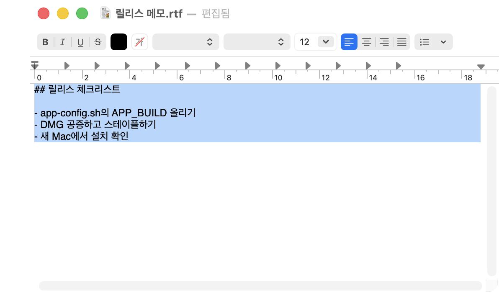
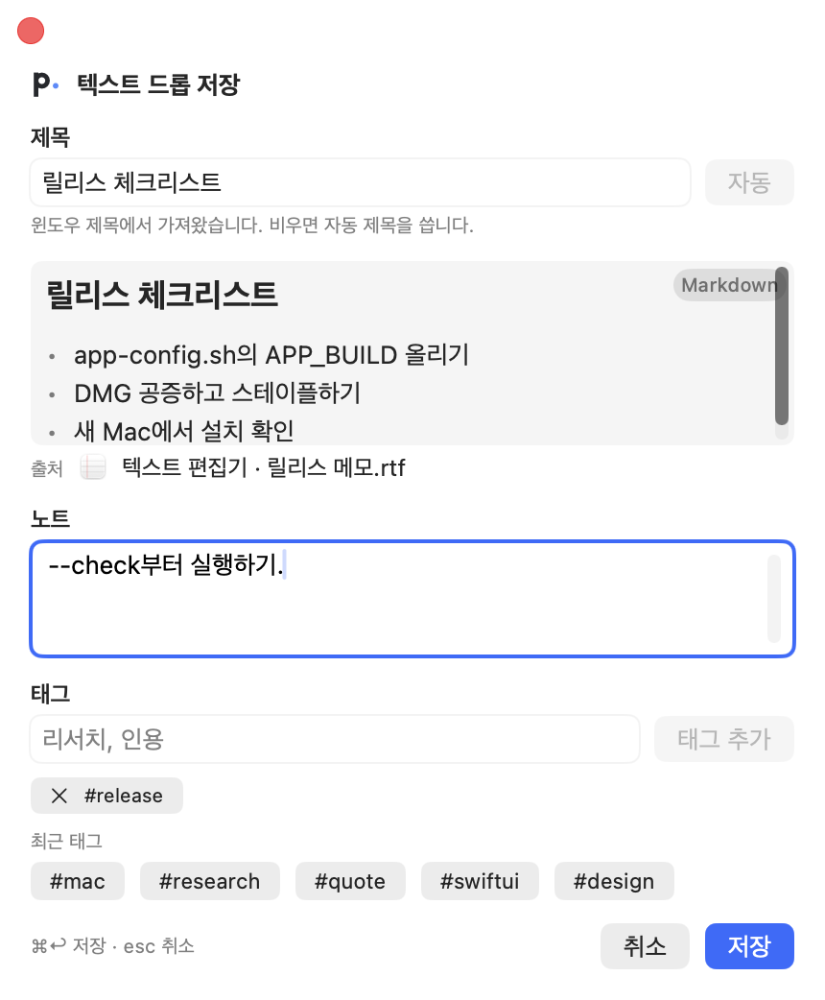
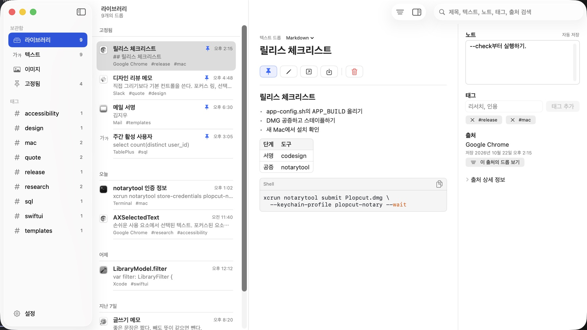
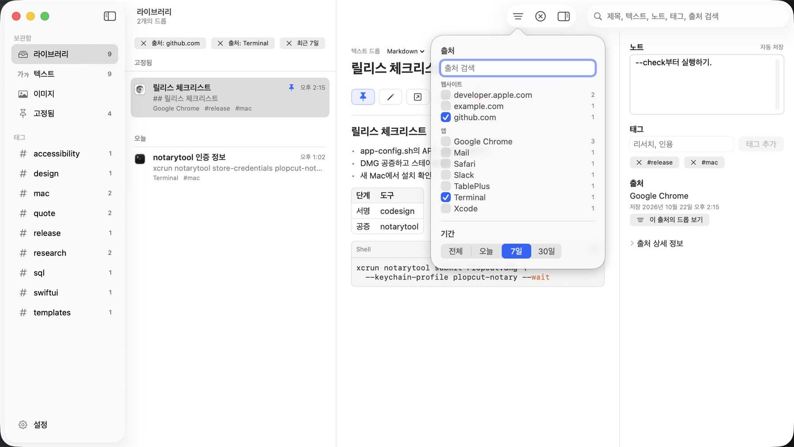
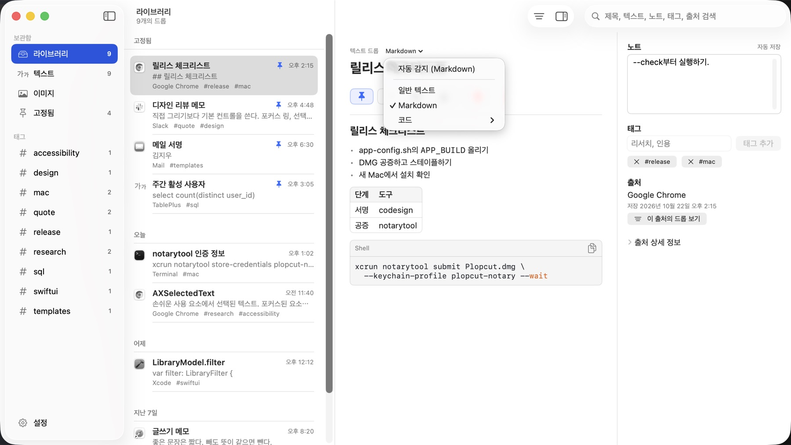
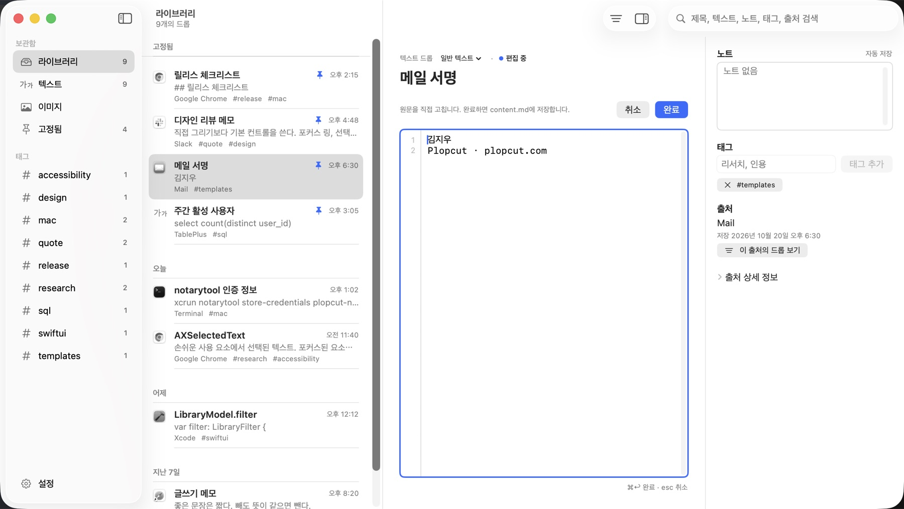

어느 앱에서든 선택하고 단축키 한 번
텍스트를 선택하고 ⇧⌘C를 누르세요. 가능하면 클립보드를 건드리지 않고 선택한 내용을 바로 읽고, 앱 이름·창 제목·Chrome 탭 주소를 출처로 남깁니다.
저장 팝업이 제목을 채워 두니 노트와 태그만 붙이고 ⌘↩로 저장하세요. 방금 복사한 텍스트나 이미지는 메뉴 막대의 클립보드 저장으로 보관합니다.
Plopcut은 macOS용 클립보드 앱입니다. 저장하고 싶은 것만 골라 노트와 태그를 붙이고, 내 Mac의 평범한 파일로 보관합니다.
macOS용 다운로드
Plopcut은 클립보드를 지켜보지 않습니다. 저장을 요청할 때만 선택한 텍스트나 클립보드를 읽습니다.


텍스트를 선택하고 ⇧⌘C를 누르세요. 가능하면 클립보드를 건드리지 않고 선택한 내용을 바로 읽고, 앱 이름·창 제목·Chrome 탭 주소를 출처로 남깁니다.
저장 팝업이 제목을 채워 두니 노트와 태그만 붙이고 ⌘↩로 저장하세요. 방금 복사한 텍스트나 이미지는 메뉴 막대의 클립보드 저장으로 보관합니다.

제목, 본문, 노트, 태그, 출처를 한 번에 검색합니다. github.com 같은 웹사이트나 Terminal 같은 앱으로 출처를 고르고, 태그와 기간으로 좁힐 수 있습니다.

Markdown은 제목, 목록, 표, 코드 블록으로 보이고, 코드는 강조 표시와 복사 버튼을 갖습니다. 형식을 잘못 짐작했다면 형식 메뉴에서 바꾸세요. 저장된 파일은 그대로입니다.

⇧⌘P로 고정한 드롭은 목록 맨 위와 고정됨 모음에 남습니다. ⌘E로 본문을 직접 고치고, 제목·노트·태그는 바로 바꿔 자동 저장됩니다.
데이터베이스도 전용 형식도 없습니다. 드롭 하나는 폴더 하나이고, 아무 편집기로 읽고 Time Machine으로 백업할 수 있습니다.
기능에 권한이 필요할 때 macOS가 처음 한 번 묻습니다. 상태는 Plopcut 설정에서 확인할 수 있습니다.
| 권한 | 필요한 이유 |
|---|---|
| 손쉬운 사용 | 사용 중인 앱에서 선택한 텍스트를 읽습니다. 직접 읽지 못하면 ⌘C를 보내 복사한 뒤 클립보드를 되돌려 놓습니다. 선택 텍스트 캡처에 필요합니다.시스템 설정 › 개인정보 보호 및 보안 › 손쉬운 사용 |
| 자동화 (Chrome) | Chrome 활성 탭의 URL을 읽어 드롭에 출처 링크를 남깁니다. 허용하지 않아도 캡처는 됩니다. 시스템 설정 › 개인정보 보호 및 보안 › 자동화 |
| 클립보드 | 클립보드 저장을 고를 때만 읽습니다. 최근 macOS는 자체 확인 창을 띄울 수 있습니다. |
Plopcut은 Apple Developer ID로 서명되고 Apple의 공증을 받아, 다른 앱처럼 바로 열립니다.
Plopcut.dmg를 받습니다.~/Documents/plopcut를 쓰거나 다른 폴더를 고릅니다.shasum -a 256 Plopcut.dmg 결과와 비교하세요.